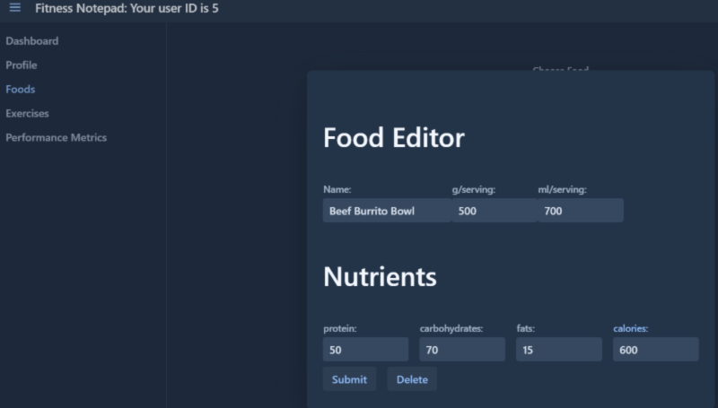

Fitness Tracker
Most fitness apps are not fully customized to a users goals. This goal of this project was to be able to fully customize all meals and workouts. For example, if someone aimed to improve their MURPH(crossfit workout) time, they would need to enter:
1 mile run
100 pull-ups
-
200 push-ups
300 squats
1 mile run
Many applications may not allow the user to indicate that the strength exercises were weighted, let alone the run. Not to mention the applications would likely not consider the time taken for the strength exercises. Not very convient for this athlete right? Is there a better way to do this?
Our web application allows us to create custom exercises and cutsom metrics. In this case, weighted run, weighted pull-ups/push-ups/squats or even the MURPH workout itself could be exercises. For example, MURPH would include the additional weight, and time taken.

We had the same idea for our meals. By creating custom foods such as "beef burrito bowl", we can simply enter the number of servings and save lots of time.
The user can now save alot of time in the future by just inputting one custom exercise for their workout
Same for meals!